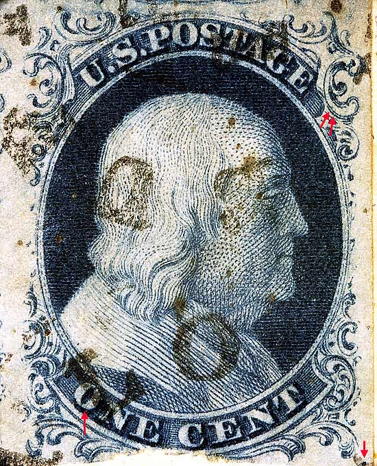
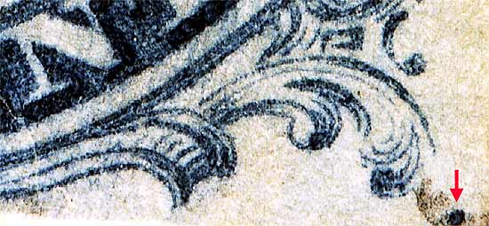
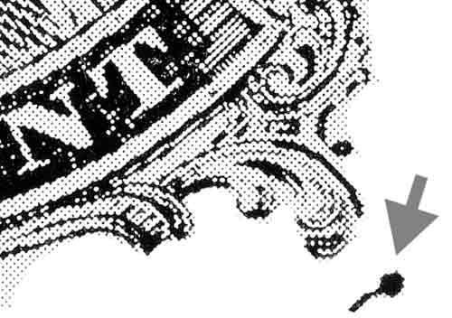
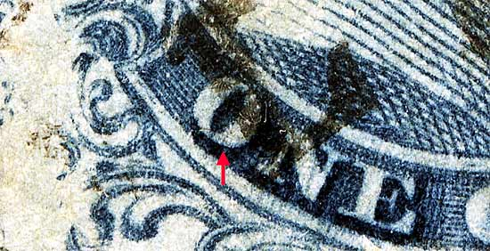
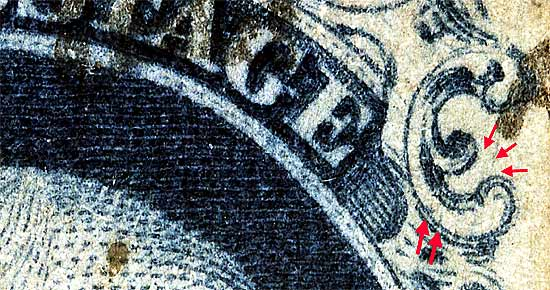

1¢ Franklin Issue of 1851-1857, PLATE 2 Pos 68R2, (Scott #7) |
| Scott #7 Blue, Relief B, Type II Issued both imperforate and perforated. Perforated copies are more scarce. |
|  |
| Figure 1. Detail view of GUIDE DOT found on this position.  |
| Figure 1B. (Below) Ashbrook INK drawing showing location of GUIDE DOT.  |
| Figure 2. (Below) Detail view of the faint plating mark on "O" of ONE.  |
| Figure 3. (Below) Detail view of the side ornament L and M, which should have a faint reversed C mark according to the plating diagrams. This plating mark probably shows itself well in earlier printings and fades away as the plate wears. The copy shown here has an ink smear running between the forementioned Ornaments. The lower two red arrows points to plating marks which is not shown on the plating diagrams, but has been confirmed on another copy. This mark is also shown on a third copy here.
 |
DISCLAIMER and COPYRIGHT INFORMATION: Thanks for visiting this site. I hope you learn something new as we are making new discoveries all the time. You, the visitor, have my permission to link to my pages and to share the INFORMATION with others. The images themselves fall under the fair use guidelines established by the United States Congress and Copyright law. Basically contact us before using. I also ask in return that you send me an e-mail if I have made a mistake, or have made some other technical blunder that in my rush to put these pages up would cause the visitor confusion. Please also visit my other website at www.slingshotvenus.com. and support the live music arts. While your there, be sure to purchase our music. There are not many philatelic rock stars around and we need all the help we can get. :-) I can be reached at: nerdman@ix.netcom.com Update 9/30/06 |